I've been making games professionally for nearly two decades, alongside various game jams that I've done throught the years.
This site is just a place to collect the various projects I've worked on over the years.
Career
Pure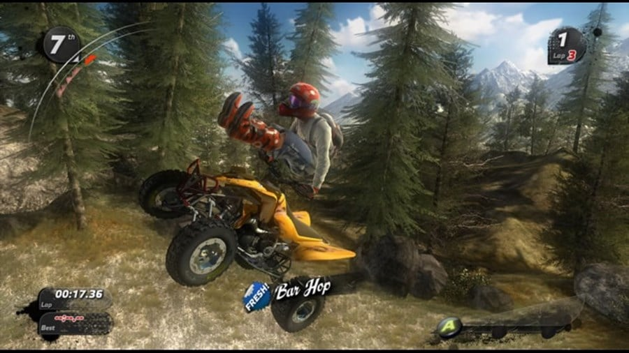
My first professional project in the games industry. A lot of people described this as "SSX with quadbikes" (I didn't realise initially that people saw quadbikes as sortof uncool). As a junior at this point, I worked on assorted odds and ends: some of the environment shaders and frontend screens are mine, & if you had a good multiplayer game that's because I spent a couple of months fixing networking bugs. Also, if you also played the game on launch (pre-patch) and saw your console unexpectedly hard reset on the leaderboard screen, yep, that was my screwup from blowing a string buffer.
Split/Second
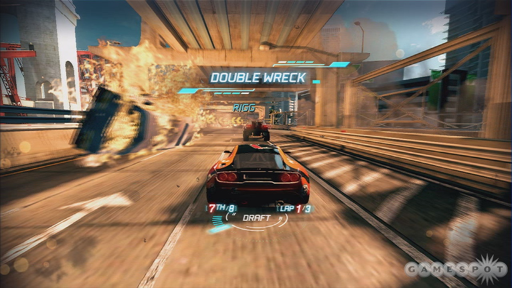
Competitive car racing, but with the destruction of a movie car chase. This was a solid racing game, although if you hate being blue-shelled in Mario Kart, just wait until someone drops a literal building on you. I worked on assorted ingame screens and bits of the UI. Very clearly recall staring at the floating 2D icons in the HUD for a couple of weeks trying to work out why they looked 'off', until I realised I'd scaled them incorrectly over distance. By the end of this project, I realised I'd become someone who gets really bothered by bad interfaces or usability.
Alien Isolation
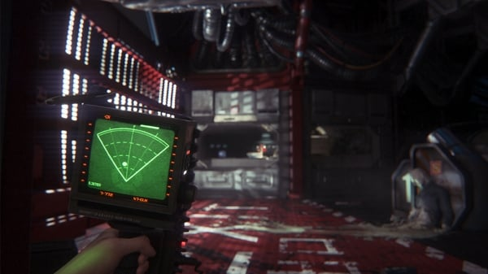
Probably the most prestigious project on my resume and ironically the one that I walked away from to pursue work elsewhere. Hence, I hold the glorious credit of "Additional Programming". For the time I was there, I was the sole UI programmer and I set up a lot of early iterations of crafting and minigames interfaces, and a first pass of the motion detector (which at least remained a substantial element in the final game).
Friendly Fire
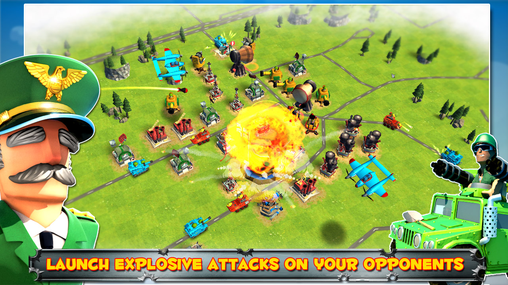
Clash of Clans but with street data. It turns out if your local roads are the routes that units have to travel down to attack your base, everyone suddenly 'lives' on a farm in the middle of nowhere. We had to do a lot of creative balancing with this game. I wrote all of the gameplay and a reasonable chunk of the frontend for this. Also, ended up porting RakNet to work with Unity and adding a synchronous multiplayer mode later in the project.
Rival Gears Racing
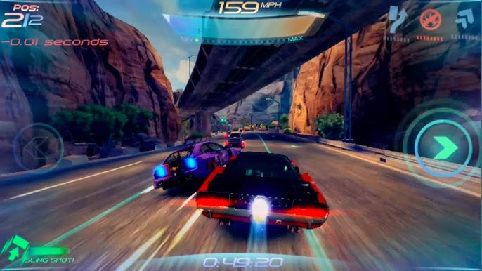
Hover-car racing. Well, mostly a game about not slamming into the back of traffic. The future still has bad drivers. I mostly worked on the UI and the campaign/tutorial progression for this, and a few odds and ends with the networking (we re-used the RakNet port I did for Friendly fire) and AI balancing.
NFL Rivals

As an English person, I spent my first week on this project googling "How to play American Football". I then went and implemented 90% of the gameplay from scratch. A lot of ball trajectory calculations (thankfully we didn't have to model drag), AI team logic, play strategies and in-world UI. I also wrote a serialised scripted game mode system towards the end although it never really got the usage I'd hoped.
Jams
Unity WebGL (Playable in browser)
Biodiversity for Beginners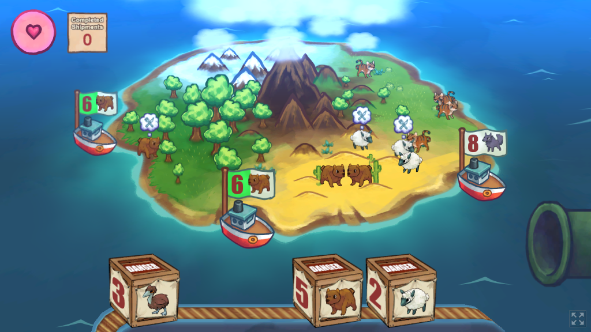
We made a game about trying to keep an animal ecosystem alive on an island, where each animal would breed with its own species and seek other species to eat (unless it was a herbivore). I coded most the animal logic and it ended up quite chaotic, I think a gentler balance for animal lifetimes and hunger would've made it more of the zen expeirence I originally envisioned, although if you like spinning plates, this could be the game for you.
Hot Celestial Bodies
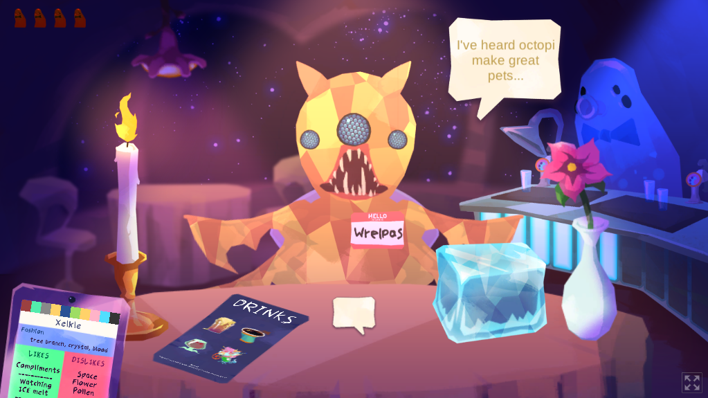
It's speed-dating with aliens. Probably the weirdest game I've made, but we got a lot of compliments on this one, so I think people vibed with the weirdness. I worked on all sorts of random bits for this, like the entry/exit animations and interacting with the items on the table. Also, I got to write all sort of terrible jokes for the text (like the name Hot Celestial Bodies).
Post-Mech Pidge
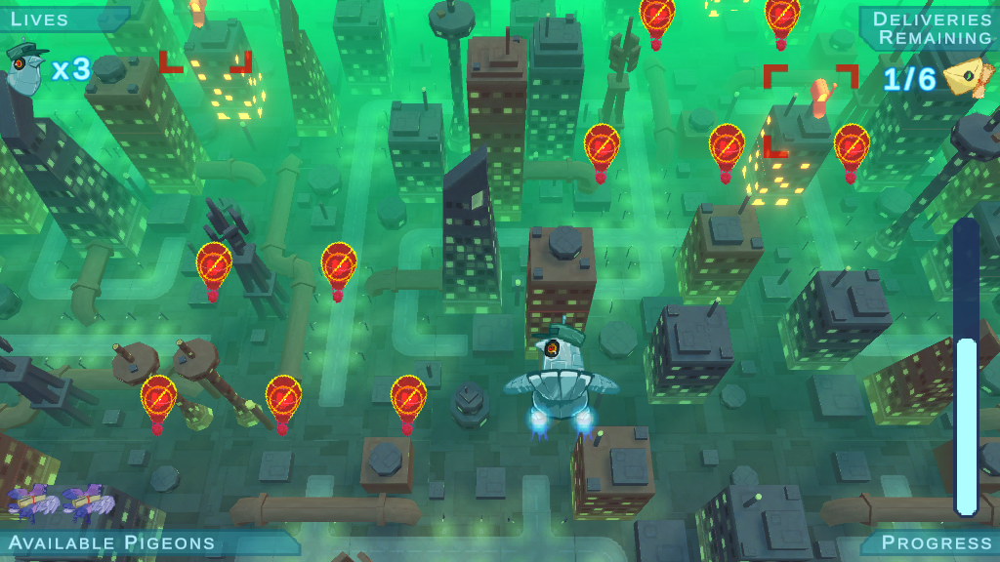
Cyberpunk pigeon shoot 'em up. We wanted to go for a more arcadey feeling game, with a little bit of meta-progression between levels. I was happy that we managed to make the shooting also the mechanism for delivering mail, so therefore the whole pigeon thing makes total sense.
Playdate (Playable in simulator or on device)
Quack Magic
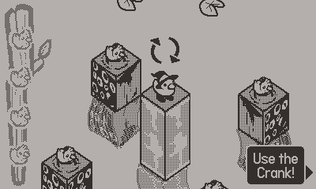
My first project on the Playdate. Originally started with the idea of doing an Escher-esque puzzle game in the style of Echochrome, and I'm pretty happy that we managed to hit the sort of experience I wanted to hit. Spent a week on this, most of which was trying to muddle together the pseudo-3d style on the Playdate, using textures put through a shear transform. Turns out this is absolutely terrible for performance on device, so ended up doing a lot of texture precaching.
Tricks For Treats
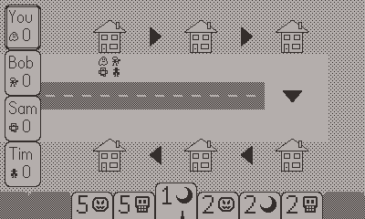
I'd been itching to try designing a simple card game, and so with the given 'Halloween' theme, I made a trick-taking game about trick or treating. It kindof worked; once the jam was over and I could step back from it a bit, I think the lack of card drawing between turns and long-term strategy made it a bit flat. I had no art support on this one, hence why it looks very a bit programmer-arty.
Croak'd
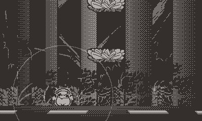
For the theme of 'Ascend', we made a game about a dead frog trying to get into heaven. The general design was "doodle jump with a grappling hook" (ie. frog tongue). Probably the hardest game I've ever made (not sure if anyone other than me has completed it), but we got 1st place in the jam, so people clearly liked it.